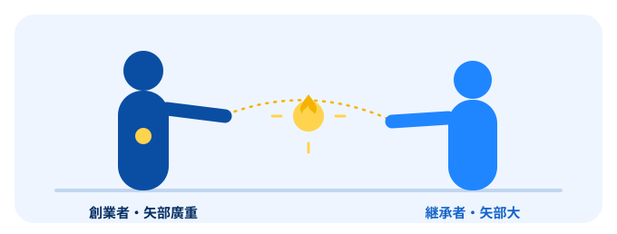

創業者・矢部廣重が確立した感動セールス。その火を、矢部大が継承し、AIの時代へ進化させています。これは、二代にわたる挑戦の物語です。

株式会社クオリティマネジメント 創業者 矢部 廣重（やべ ひろしげ）
テキサスインスツルメンツ、バクスター社といった米国優良企業で20数年にわたり経営幹部を歴任。世界最先端のマネジメント体験と、深く探究した帝王学・人物学を融合させ、独自のビジネスモデルを体系化しました。ビル・クリントン第42代米国大統領との交流も持つ人物です。
1988年、株式会社クオリティマネジメントを設立。「商品力や価格に頼らず、お客様に『あなたから買いたい』と言わせる」——その思想は、設立から37年を経たいまも、当社の背骨であり続けています。
矢部廣重が体系化し、数千名の経営者が実践してきた3つのメソッド。
米国優良企業のマネジメントと帝王学を融合。人の上に立ち、人を動かす原理原則。
感動は偶然ではなく、設計できる。「あなたから買いたい」を生む仕組みづくり。
商品より、人。選ばれ続ける魅力的な人材と組織を育てる。
10ヶ月コースの実践型プログラム。経営者自身が「戦わずして売る」を体得します。
現場から組織を変える研修計画。全国で実践型セミナーを提供してきました。
「狙ったお客の80%は落とせる」——感動セールスの原典が、ここにあります。
※ 書影画像・販売リンクは確定後に差し込みます。
創業の哲学を受け継ぎ、現場で実証し続けてきた軌跡。
米国優良企業のマネジメントと帝王学を融合し、「喜びと感動の経営革命」を体系化。会社の原点が生まれる。
日本大学芸術学部演劇学科を経て、JACスタントマンに。舞台・映画に出演（〜1999年）。
創業者・矢部廣重のもとで、感動セールスの哲学を継承。
大人向けバク転講座を開講。「できない」を「できる」に変えるビジネスを開始。
飲食店、人材派遣、システム開発、タレント事務所など多角的に展開。年商15億円規模まで育成。
世界同時バク転でギネス世界記録を達成。バク転ビジネスで10億円を創出。
マンハッタンに飲食店「寿海」をオープン。海外でも通用する事業づくりに挑戦。
逆境のなか過去最高益を達成。常識の逆を行く「逆転発想術」を体現。
自社のバイアウトとPMIを実行。経営の出口までを当事者として経験。
フリーランスのプロデューサー／経営コンサルタントとして再始動。感動セールスをAIと掛け合わせ、中小企業をリボーンさせる。
矢部廣重が「感動で売る」という火を灯し、矢部大がそれを現場で磨き、いまAIと掛け合わせて次の時代へ渡そうとしています。
道具は変わっても、本質は変わりません。人の心を動かすこと。一緒に走ること。それが、クオリティマネジメントが二代にわたって大切にしてきたことです。
ご一緒しましょう！ — 矢部 大